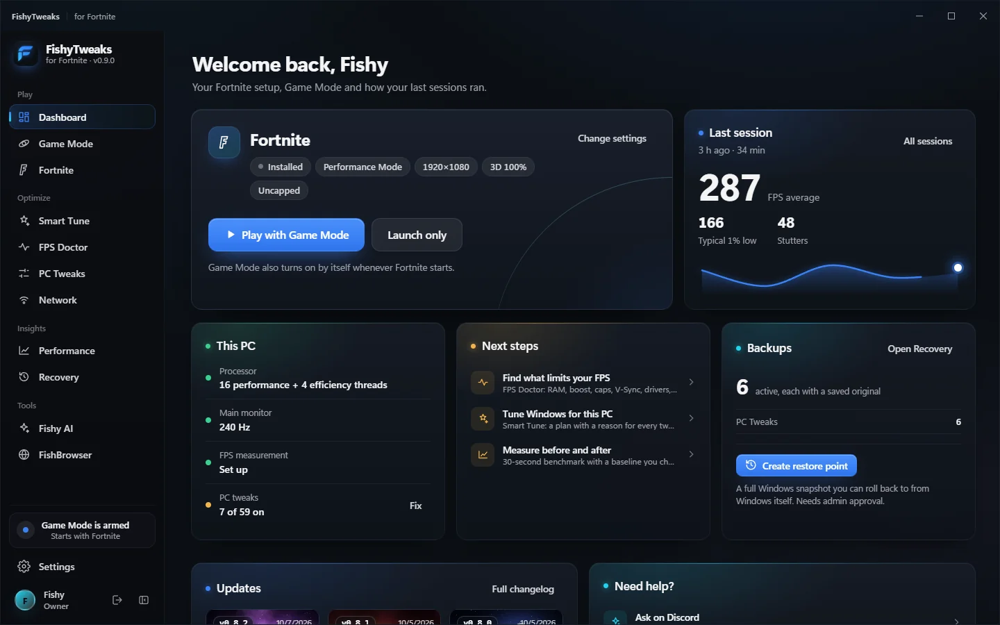
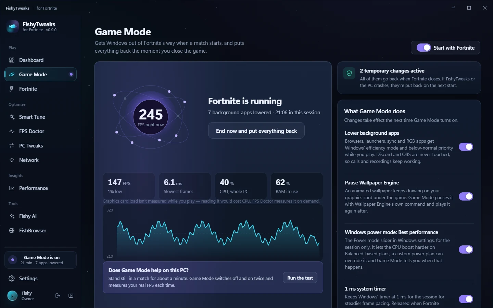
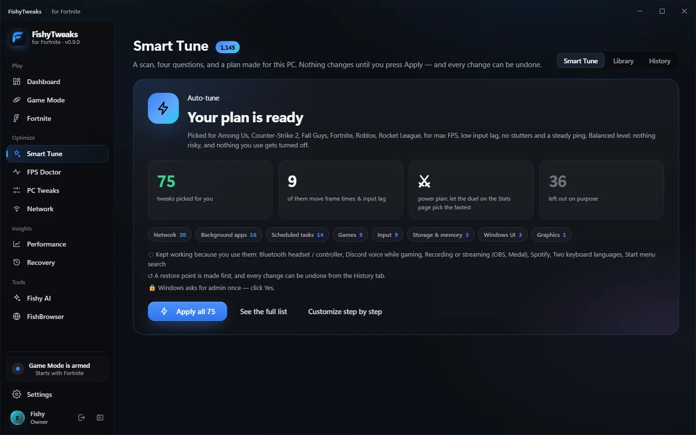
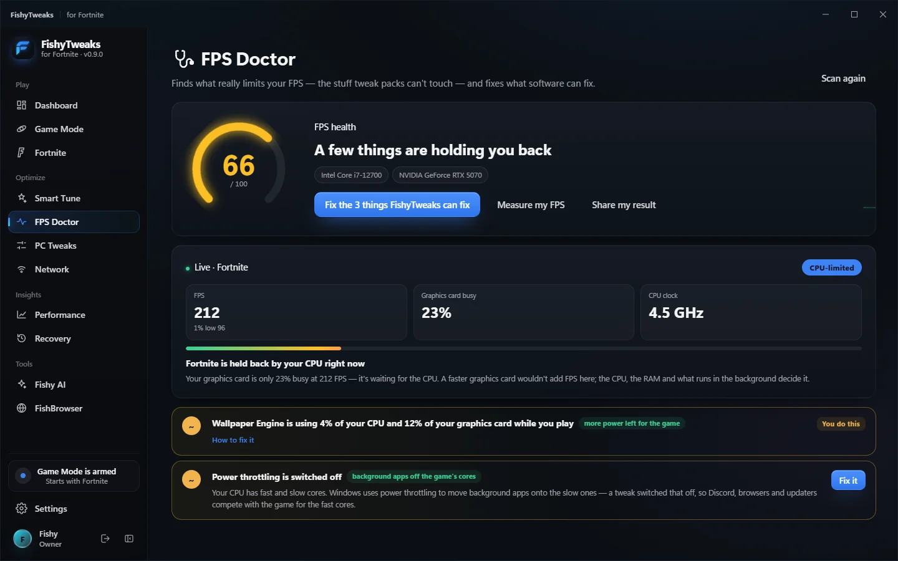
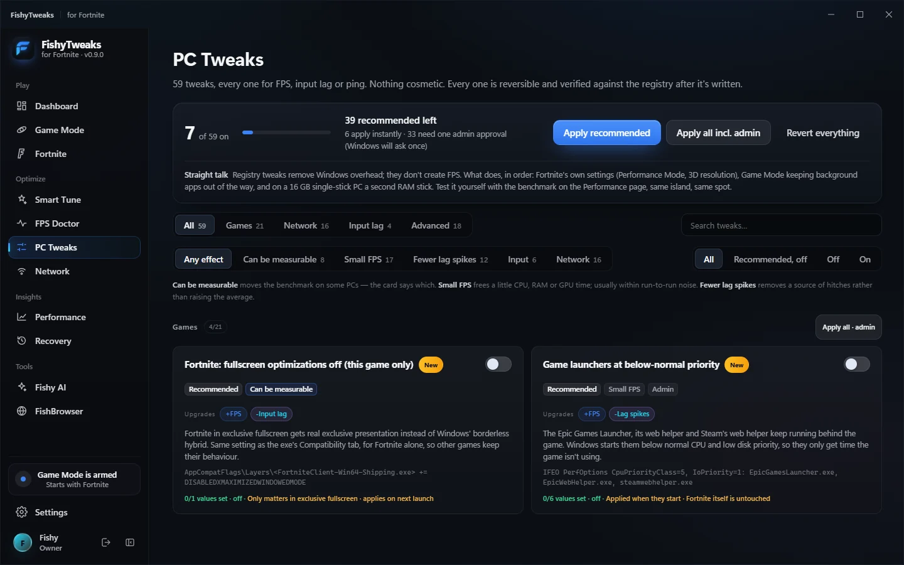
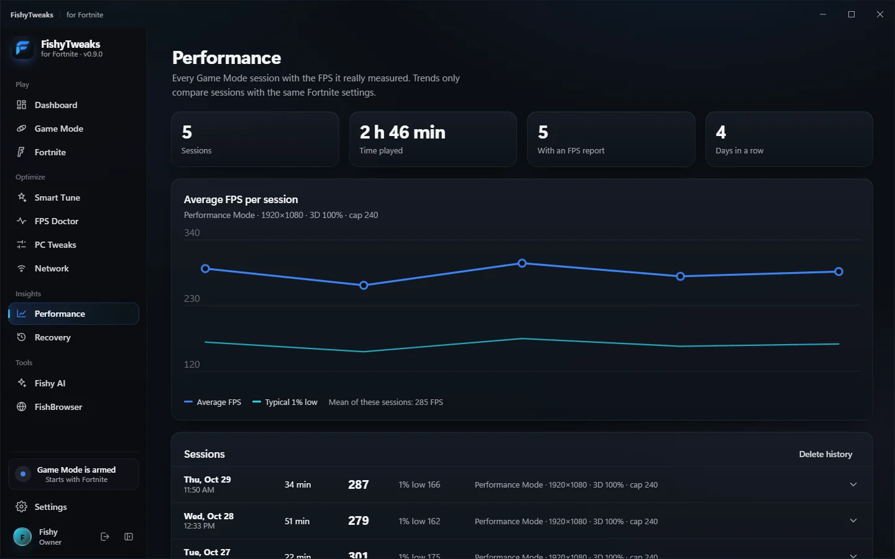
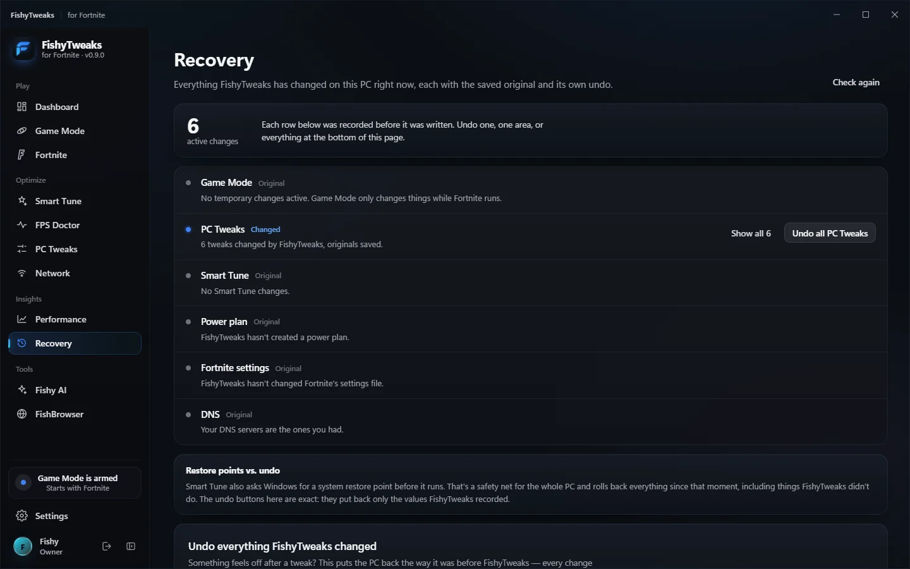
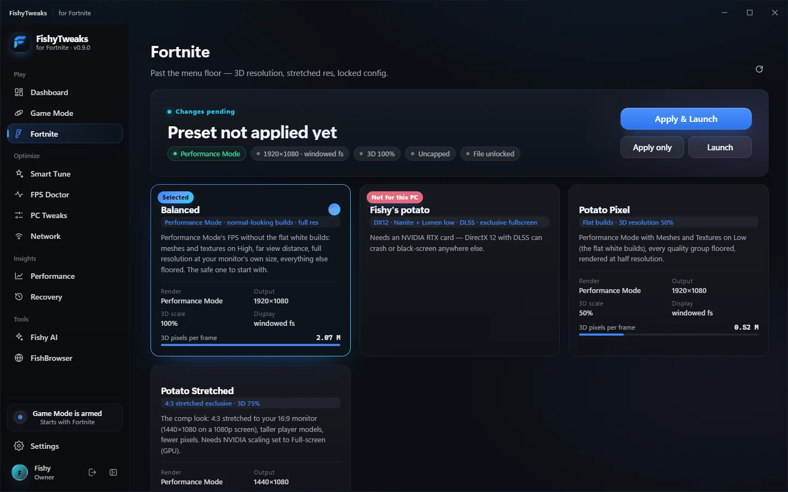

Game Mode
Windows steps aside while you play. Then steps back.
Game Mode turns on when Fortnite starts (you can switch that off), applies a short list of temporary changes, and undoes all of them the moment the game closes — even after a crash.
FishyTweaks gets Windows ready for Fortnite, shows you what limits your FPS, and puts every change back when you ask. One app, nothing hidden.







Prepare the PC before the match, measure what happens during it, and put Windows back the way it was after. Each tool shows exactly what it does.
Game Mode
Game Mode turns on when Fortnite starts (you can switch that off), applies a short list of temporary changes, and undoes all of them the moment the game closes — even after a crash.
Smart Tune
Smart Tune scans your hardware, asks four questions, and picks from a library of 1,145 documented tweaks. Things you rely on — a Bluetooth controller, Discord voice, OBS — stay on.
FPS Doctor
FPS Doctor checks RAM channels, CPU boost, caps, V-Sync and drivers. With Fortnite running it measures whether the CPU or the graphics card is the limit — then tells you which fixes software can do and which need hardware.
Game Mode logs each match: length, average FPS and 1% lows. Trends only compare sessions that used the same Fortnite settings, so a change of preset can't fake an improvement.
Pick a preset, a resolution and an FPS cap; FishyTweaks writes Fortnite's own settings file and keeps a copy of yours. Presets that could break the game on your hardware are switched off before you can choose them.

No online account: your profile stays on this PC. Results depend on your hardware, so FishyTweaks measures instead of promising numbers.
Get the installer from GitHub. It installs for your Windows user only and updates itself later — each update is signature-checked before it's installed.
No admin needed to install.
Run FPS Doctor to see what limits your PC, let Smart Tune build a plan, and pick your Fortnite preset. Nothing changes until you press Apply.
Admin once for system-wide changes: machine-level registry values, services, the custom power plan, DNS and the FPS meter.
Press Play with Game Mode, or just start Fortnite the usual way — Game Mode notices and turns on by itself. When you close the game, everything temporary goes back.
Measured, not promised: check the result in Performance.
FishyTweaks records the previous value before it writes anything. This is the full list of what it touches.
| Area | What changes | Permission | How it's undone |
|---|---|---|---|
| Smart Tune & PC TweaksPermanent until you undo | Registry values, service start types, scheduled tasks, startup entries and power-plan settings — only the ones you approved. | Your user Admin, once per run | The exact previous value is saved first, including values that didn't exist. The Recovery page lists every active change; undo one tweak, one area or all of them. A system restore point is made before each Smart Tune run. |
| Game ModeTemporary, one session | Background-app priority, Windows power mode, the 1 ms system timer, and standby memory when free RAM is low. | Your user Admin to free memory | Written to a recovery file before it happens and put back when Fortnite closes. If the PC or the app crashes, it's put back on the next start. |
| Fortnite settingsYour choice of preset | Fortnite's own settings file: quality levels, resolution, render mode and FPS cap. | Your user | Your settings are saved before the first change. One click restores them. |
| Everything at onceUndo everything | Tweaks, the NVIDIA driver profile, the custom power plan and Fortnite settings. | Admin, once per run | One button puts the PC back the way it was before FishyTweaks and lists every step it took. |
Fortnite is found by its process name only. FishyTweaks never opens, reads or writes the game process, so there's nothing for Easy Anti-Cheat to see. It also never disables Windows security.
Installers are published on GitHub Releases. Updates are signed, and the app checks the signature with a key built into it before installing.
There's no paid Microsoft certificate yet, so Windows may show "unknown publisher" the first time.
Profiles live only on your PC. No ads, no tracking. The app sends one anonymous count per day so we know how many people use it, and checks GitHub for updates.
Something else? Ask on the support page.
Free for Windows 10 and 11. Installs in seconds and keeps itself up to date.
This release was published before the rename, so the installer is still called FishLaunch.